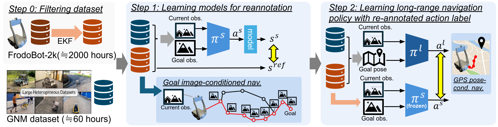

We present a system for training long-horizon end-to-end navigation policies capable of generalizing to deployment in highly diverse outdoor and indoor environments. The result is a single end-to-end policy capable of navigation on the scale of hundreds of meters, while generalizing to a broad distribution of unstructured environments. To accomplish this, we must make use of every source of data available. While previous efforts to train general navigation policies typically rely on centralized researcher-collected datasets, such data is fundamentally high-quality but limited in scale. We thus turn to crowd-sourced data, which is readily available in large quantities but is relatively low-quality. To address this, we train a simple, short-horizon ``reannotation'' policy, optionally taking advantage of actions from the high-quality dataset, and use this to relabel the low-quality dataset with near-expert actions connecting short-horizon sequences of states. The result is LogoNav, a state-of-the-art general navigation policy capable of navigating over long horizons in complex outdoor environments. We test LogoNav's generalization capabilities by evaluating performance in six countries around the world and find it to be a highly capable navigator.
Our goal in this work is to enable end-to-end training of navigation policies for ground robots that can generalize broadly to a wide range of environments and follow reasonable conventions such as staying on paths and avoiding collisions. This requires large amounts of training data, which we can obtain from low-cost robotic platforms and crowd-sourced human data collection. While these sources can provide large amounts of data, this data is of low quality: the actions might not be consistently good, and even when they are, the sensors and state estimators on the robot might not allow for accurately estimating the next waypoint that corresponds to the human driver's intent. To address this, we propose Model-Based ReAnnotation (MBRA) to relabel data.
In MBRA, at first, we apply the extended Kalman filter to denoise the action commands in the noisy dataset. We also prepare the small publicly available navigation datasets with accurate action labels as a starting point for predicting actions. Filtering the dataset is not enough to mitigate noise, so we train a re-annotation model with model-based learning. Since model-based learning is robust for noisy data, we can incorporate both the accurate GNM dataset and the large but noisy FrodoBot 2k dataset to learn a re-annotation model. Since this model learns to predict actions between close image frames, we can directly use this model as a short-horizon goal-image conditioned navigation policy. Then, we use the re-annotation policy to create more useful action labels for trajectories in the large dataset. We use this data to train the long-horizon navigation policy, which can navigate the robot toward the goal pose about 50 meter away.
We use a FrodoBots-2k dataset, which was collected in more than 10 cities around the world by the remote teleoperation. The FrodoBots-2k dataset includes the sequence of the front- and back-side camera image, GPS position, IMU sensor and wheel odometery for about 2000 hours.
We use a wide variety of egocentric datasets to train on, including: 1) Indoor Navigation Dataset: image observations from mobile robot trajectories in office building environments (see GO Stanford2, GO Stanford4 and HuRoN(SACSoN) Dataset), 2) \bf YouTube Tour Dataset: YouTube video data of tours in indoor and outdoor environments, and 3) Human-walking Dataset: data collected from walking with a camera in an indoor home setting and outdoor city environments.
We evaluate our trained policy on target object navigation, which tasks the robot with navigating toward a visible target object from the current robot pose, in the various natural environments, which is not seen in the training datasets.
Given that our proposed method leverages in-the-wild videos recorded by a variety of cameras at different poses for training, it is inherently capable of generalizing to different embodiments. To rigorously evaluate our policies' cross-embodiment capabilities, we test our policy on the three different robot setups, 1) quadruped robot, GO1 with PCB-mounted fisheye camera, 2) same mobile robot with different cameras such as Intel Realsense D435i, PCB-mounted fisheye camera, and Ricoh Theta S.
Even when there are objects in the same type as the target object, our method distinguishes them from the prompts and allows navigation toward the correct target objects,
@inproceedings{hirose25mbra,
title={Learning to Drive Anywhere via Model-Based Reannotation},
author={Noriaki Hirose and Lydia Ignatova and Kyle Stachowicz and Catherine Glossop and Sergey Levine and Dhruv Shah},
booktitle={arXiv},
year={2025}
}